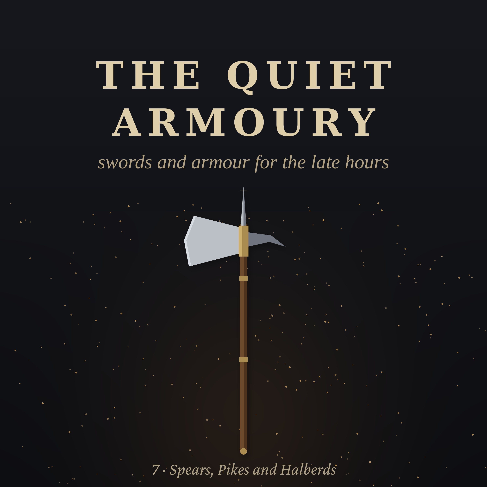

The Quiet Armoury · Episode 7 · 39 min
Spears, Pikes and Halberds
The oldest weapon in the world is not a sword. It is a stick with a point. A winter evening in 1620, in the arsenal of a small Swiss city: the keeper has gone home with a cold, and you, his fourteen-year-old helper, count and oil the long weapons rack by rack... Inside: the oldest spears ever found, the long hedge of the Macedonian sarissa, farm tools turned to war, Flemish townsmen against French knights at Courtrai, the mountain men of Sempach and the Winkelried story, the Swiss square, push of pike, the drill, the knight's poleaxe, the lance, the bayonet that ended the pike, the Pope's Swiss Guard, and long weapons far beyond Europe. Chapters: The first long weapon · The long hedge · Tools of the farm · The day of the spurs · The mountain men · The square · The battle of giants · Ash · Push of pike · The drill · The staff · The knight's axe · The lance · The end of the pike · The finest halberds · The Pope's guard · Elsewhere · The count. Read by a synthetic voice; script written and fact-checked by the show's team. Additional sounds: Joseph Sardin, BigSoundBank.com (CC0).
The script
The oldest weapon in the world is not a sword, or a knife, or a bow. It is a stick with a point.
People were hunting with spears hundreds of thousands of years before anyone made the first metal blade. And in one form or another... spear, lance, pike, halberd, bill, bayonet... the long weapon stayed at the front of every battlefield on earth until barely two hundred years ago.
Swords were for the few. The long weapons were for everyone.
The Quiet Armoury. Episode seven... the long weapons. Spears, pikes and halberds.
It is a winter evening in the year sixteen twenty, in a small Swiss city on a river, at the foot of the mountains.
You are fourteen, and you are the helper of the keeper of the city arsenal. The arsenal is a tall stone building near the city wall, five floors high, with small windows and heavy doors. In it, the city keeps the weapons for its men... every citizen must be ready to defend the city, and the city must be ready to arm him.
Tonight, the keeper has a cold, and has gone home to bed. He has left you with a lantern, a pot of oil, a pile of rags, and a list. You are to go through the second floor, rack by rack, and count the pikes and halberds, and oil the iron of each one against the winter damp.
There are a great many of them. The night is long. So let us begin.
You know the building well by now. On the ground floor, behind the great doors, stand the cannon on their wooden carriages, and the powder is kept in a vault apart, behind iron. On the first floor, the armour... rows of breastplates and helmets on wooden stands, like a crowd of headless men. On the second floor, your floor tonight, the long weapons. On the third, the muskets and the swords. And at the top, under the roof beams, spare shafts, broken weapons waiting for mending, old flags, and the pigeons that the keeper is always meaning to chase out.
Chapter one. The first long weapon.
The first rack, by the stairs, holds the oldest kind of long weapon there is. Plain spears. A shaft of ash, as long as a man is tall, or a little more, with a leaf-shaped iron head on the end.
The spear is older than history. In a coal mine in northern Germany, at a place called Schöningen, archaeologists found wooden spears, carefully shaped from young spruce trees, two metres long, balanced like a modern javelin, and buried beside the bones of wild horses. They are some two or three hundred thousand years old. They were made by people who were not quite like us.
Why has the spear lasted so long?
Because it does one thing better than any other hand weapon. It keeps the danger away from you. With a spear, you can reach a man, or an animal, before it can reach you. It is cheap... a straight piece of wood and a small piece of iron. It is easy to learn. A farmer who has never fought can be taught to use it in an afternoon. And when many men stand together, side by side, with spears held out in front of them, they make a hedge of points that no horse will willingly run into.
That last fact is the whole story of tonight.
Chapter two. The long hedge.
The ancient Greeks fought with spears, in tight ranks, behind their great round shields. And the Macedonians, under King Philip and his son Alexander, took the idea further than anyone before them.
They gave their infantry a spear so long it needed both hands... the sarissa. It was perhaps five or six metres long, its shaft made of tough cornel wood, with a heavy iron point at the front and an iron spike at the back. Men stood in deep formations, sixteen ranks deep, and held their sarissas forward, so that the points of the first five ranks all reached out beyond the front of the formation.
To an enemy approaching from the front, it looked like a wall of iron points, five deep, moving toward him at a walk. Nothing could get through it from the front. The trouble was the sides and the back. A long spear does not turn quickly. Whoever could reach the flank of a phalanx could beat it.
Remember that. It will come back.
Chapter three. Tools of the farm.
The next rack holds stranger things.
Long shafts, with blades of every shape on the end. A broad, curved blade, like a great knife on a pole... a glaive. A blade with a long hook bent forward, and a spike at the top, and another spike sticking out of its back... a bill. A blade like a long, narrow axe. A blade like a bent sickle.
Many of these weapons began on the farm.
In the Middle Ages, ordinary people were often forbidden to carry swords. But every village had billhooks for cutting hedges, scythes for the hay, flails for the grain, forks for the straw. When war came, and the men of a village were called out, they brought what they had. And smiths turned those tools into weapons... a scythe blade straightened and set on end, a billhook given a spike and a longer shaft.
The English bill is the best-known of these. It grew from the hedging tool into a fearsome weapon, with a hook to catch a rider and pull him from his horse, a blade to cut, and a spike to thrust. In the wars of England in the fourteen hundreds, the billmen stood in the line beside the archers. A hundred years later, under Henry the Eighth, the bill was still the main weapon of the English foot soldier.
Chapter four. The day of the spurs.
On the eleventh of July, in the year thirteen hundred and two, near the town of Courtrai, in Flanders, the army of the King of France met an army of Flemish townsmen... weavers, butchers, fullers, craftsmen of the great cloth cities.
The French had the finest knights in Europe, in mail and plate, on great horses. The Flemings had almost no cavalry at all. They had a long weapon of their own, called the goedendag... a thick wooden club, as tall as a man, with an iron spike set into its top. A spear and a club in one. Its name means, as far as anyone can tell, good day... perhaps as a grim joke.
The Flemings stood behind streams and ditches, on soft ground, in a close line. The French knights charged. Their horses stumbled in the ditches and the mud. And the Flemish line held, with its goedendags held out, points forward, and then it moved forward itself, and struck.
By the end of the day, the flower of the French nobility lay in the marshy fields. The Flemings collected the golden spurs of the dead knights... hundreds of pairs, the story says... and hung them in a church in Courtrai, as a thank-offering. It is still called the Battle of the Golden Spurs.
For a long time, knights had believed that a charge of armoured horsemen would scatter any crowd of men on foot. That day, it did not.
Twelve years later, in Scotland, near Stirling, at a stream called the Bannock Burn, the same lesson was taught again. The Scots under Robert the Bruce formed their spearmen into great tight rings and blocks, bristling with long spears on every side, which they called schiltrons. On the second day of the battle, the schiltrons did something the English knights had not expected. They did not wait to be charged. They advanced, at a steady walk, spears levelled, and pushed the English cavalry back into the boggy ground behind them. The English army broke.
Chapter five. The mountain men.
In the valleys of the Alps, in the late twelve hundreds, the people of a few small mountain districts swore an oath to defend one another. That was the beginning of the Swiss Confederacy. And to defend themselves against their powerful neighbours, the Habsburg dukes, they needed a weapon that farmers and herdsmen could use against knights.
They found it in the halberd.
The halberd is in the next rack, and there are a lot of them.
It is a shaft about two metres long, a little taller than a man. On top, there is an axe blade, broad and heavy, for cutting. Opposite the blade, a hook or a spike, for pulling and for piercing. And at the very top, a long spike, for thrusting. Three weapons in one.
Its name comes from German... from halm, a staff, and barte, an axe. A staff-axe.
In the year thirteen fifteen, at a place called Morgarten, a Habsburg army marched along a narrow road between a steep slope and a lake. The Swiss were waiting on the slope above. They rolled stones and tree trunks down onto the road, and then they came down after them, with their halberds, onto knights who could not turn their horses, could not form up, and had nowhere to go but the water.
It was an ambush, not a pitched battle. But it was the first famous victory of the Swiss. And over the next century, at Laupen, at Sempach, and elsewhere, they won again and again.
At Sempach, in thirteen eighty-six, there is a famous story. The Habsburg knights had dismounted, and stood in a dense line with their lances out, and the Swiss could not break into it. Then a man named Arnold von Winkelried, it is said, called out to his comrades to look after his wife and children... threw himself onto the enemy's points, gathered as many lances as he could into his arms, and bore them down to the ground with his body, so that the Swiss could pour through the gap.
Is it true? Historians have argued about it for a century and a half. The story was first written down about a hundred years after the battle. Some think Winkelried was a legend. Others think he may well have been real. Every Swiss child knows his name either way.
Chapter six. The square.
By the fourteen hundreds, the Swiss had changed their weapons again. They had learned the lesson of the Macedonians. The halberd was fine for close fighting, but against horsemen, nothing beat a very long spear.
So they took up the pike.
The next racks, row after row, hold nothing else. Pikes. Long, straight, plain shafts of ash, with small, narrow iron heads, and long strips of iron running down from the head along the shaft, so that no one could cut the head off with a sword. They are much longer than the room is wide... so they lie flat, on pegs, all along the wall.
You know how long they are, because the keeper made you measure one. About five metres. Nearly three times your height. They weigh about three kilograms each. Not heavy for its length... but at the end of five metres, every movement of your hands is magnified, and holding the point steady takes practice and a strong back.
The Swiss fought in great blocks of men... squares, many ranks deep, hundreds of men on each side, the pikes of the front ranks levelled toward the enemy, the rest held upright, ready to step into any gap. Around the edges and in the middle of the square, halberdiers, to deal with anyone who got close. And at the front, sometimes, men with crossbows and handguns.
Such a square could turn, slowly, to face any direction. It had no weak flank, because every side was a front. Horses would not charge into it. And when it advanced, at a steady march, drums beating, it was very hard to stop.
In the years fourteen seventy-six and fourteen seventy-seven, the Swiss fought the richest and most powerful prince of his time, Charles the Bold, Duke of Burgundy. He had a splendid army, with heavy cavalry, artillery, and archers from England. At Grandson, at Murten, and finally at Nancy, in the snow, the Swiss squares broke the Burgundian army three times. At Nancy, the duke himself was killed. His body was found two days later, frozen into a pond, his head split by a halberd.
After that, every prince in Europe wanted Swiss pikemen. And the Swiss, a poor mountain people, sent their young men abroad to fight for whoever would pay. For more than a century, they were the most feared infantry in Europe.
Chapter seven. The battle of giants.
Nothing lasts for ever, not even the Swiss square.
In September of fifteen fifteen, near Milan, at a place called Marignano, the Swiss met the army of the young King of France, Francis the First. The French had heavy cavalry, Landsknecht pikemen of their own, and a great deal of artillery. The battle lasted two days. The Swiss squares attacked, again and again, through the French guns and into the French pikes, and were charged, again and again, by the French knights. The fighting went on into the night, by moonlight, and began again at dawn.
An old Italian general who had fought in eighteen battles said that the others had been children's games, and this one was a battle of giants.
In the end, the Swiss withdrew, in good order, carrying their wounded, their squares still unbroken. But they had lost thousands of men. And many historians date from that battle the slow decision of the Swiss Confederacy to stay out of the wars of the great powers... the beginning of the long Swiss neutrality that lasts to this day.
Seven years later, at a place called Bicocca, in Italy, Swiss pikemen attacked a Spanish position across a sunken road, behind an earth bank, where Spanish soldiers with handguns stood in four ranks, firing in turn. The Swiss were shot down in hundreds before they could even reach the enemy. In Spanish, it is said, the word bicoca came to mean a bargain... something got very cheaply.
The guns had begun to win.
Chapter eight. Ash.
You run your hand along one of the pike shafts as you oil its head. It is smooth, pale, and very slightly springy. When you lift one end and let it go, it sways, and settles.
Almost every European long weapon was made of ash.
Ash is the wood of choice for anything that must bend without breaking... spears, pikes, tool handles, the oars of boats, the shafts of carts. It is strong for its weight. It is elastic. And when it does break, it tends to break slowly, with a splintering crack, rather than snapping without warning.
A good pike shaft was not sawn from a log. It was split, along the grain, so that the long fibres of the wood ran straight from one end of the shaft to the other, unbroken. Then it was shaved down with a drawknife, tapered toward the point, and left to season, slowly, in a dry place, for months or years. A shaft cut across the grain would break at the first hard push. A shaft split along it would bend like a bow and come back.
The trees were cut in winter, when the sap was down. Young, straight ash, from hillside woods managed for exactly this. Some towns kept their own woods for their arsenal, the way a navy kept oak forests for its ships.
Chapter nine. Push of pike.
When two squares of pikemen met each other, what happened?
The English, in the sixteen hundreds, had a phrase for it: push of pike. The front ranks levelled their points and came together, the pikes crossing, and the men leaned in, the ranks behind pushing on the ranks in front, like two crowds trying to go through the same narrow door. Men jabbed at faces and legs. Points broke. Shafts snapped. It could go on for a long time, swaying back and forth, until one side gave way.
It was exhausting, terrible, and quite unlike anything in films. The men in the front ranks wore helmets and breastplates, and were paid more, because their place was the most dangerous.
In Germany, the emperor Maximilian built his own army of pikemen on the Swiss model... the Landsknechts, whom we met in the first episode, with their slashed and puffed clothes in clashing colours. The Swiss and the Landsknechts hated each other with a special hatred, the hatred of men who do exactly the same job for rival employers. When they met in battle, they were said to give no quarter at all.
The Spanish, in their turn, mixed their pikemen with men carrying firearms, in great formations called tercios. The pike protected the guns while they were being reloaded. The guns killed at a distance. For a hundred and fifty years, the pike and the musket fought side by side, on every battlefield in Europe.
Chapter ten. The drill.
On Sunday afternoons, in good weather, the men of the city come to the arsenal, collect their weapons, and march out to the meadow by the river, to drill.
They practise the movements in a book. It is a Dutch book, printed only a few years ago, full of beautiful engravings of soldiers in every position, made so that men all over Europe could learn the same drill. There are more than thirty separate positions just for the pike. Each one has its word of command, shouted by the sergeant, and each one must be done exactly, by everyone at once.
Shoulder your pike: the pike carried upright against the shoulder, point to the sky. Port your pike: the pike carried across the body at a slant. Charge your pike: the pike brought down level, the point toward the enemy, the back hand at the hip, the body leaning forward. Order your pike: the butt on the ground beside the right foot, the pike standing upright, at rest.
From a distance, a block of pikemen moving together through these postures looks like a field of tall grass bending all at once in the wind. Then, at charge, the grass becomes a wall of points.
Every movement of the drill had a reason. A pike carried carelessly could knock out the man behind you. A pike lowered too fast could catch in the man in front. Five metres of ash, in a crowd of men, was dangerous to everyone near it, friend as well as enemy. Only drill made it safe... and only drill made it deadly.
Chapter eleven. The staff.
Every long weapon, in the end, is a staff with something on the end of it. And some masters said that the staff itself, with nothing on it at all, was the best teacher of all.
In England, the quarterstaff... a straight pole of oak or ash, about two metres long, held in both hands... was the weapon of country fairs, of travellers on lonely roads, and of a great many contests on village greens. It was cheap, it was everywhere, and in skilled hands it was very dangerous. The old English fencing master George Silver, who disliked the rapier so much, thought the short staff the finest weapon a man could carry, and said a man with a staff could hold off a man with almost anything.
The most famous staff fight in English is in an old ballad. Robin Hood meets a very tall stranger on a narrow bridge over a stream. Neither will give way. They cut themselves staffs from the wood, and fight on the bridge, until the stranger knocks Robin into the water. Robin climbs out, laughing, and asks his name. It is John Little. The outlaws, being outlaws, change it round, and call him Little John.
The halberd, too, had its art. Joachim Meyer, the Strasbourg cutler and fencing master whom we met in an earlier episode, included the halberd and the staff in his great fencing book... how to hold them, how to strike, how to guard, how to use the back of the shaft as well as the head. A halberd in trained hands was not a farmer's tool. It was quick, clever, and hard to get past.
Chapter twelve. The knight's axe.
There is one rack in the corner of your floor that holds only a few weapons, and they are finer than the rest. Their shafts are shorter... about the height of a man... and fitted with long strips of iron along their length. Their heads are heavy and complicated. On one side, a hammer with a small toothed face, or a short axe blade. On the other, a curved spike, like a beak. On the top, a long spike. And at the bottom of the shaft, another spike.
These are poleaxes. They were not for the town militia. They were the weapons of knights.
When knights fought on foot, in full plate armour, as they increasingly did in the fourteen hundreds, a sword was of limited use. A poleaxe was what they wanted. With two hands on a long shaft, the hammer could stun a man through his helmet. The spike could find a gap. The beak could hook a leg or an arm. It was the knight's favourite weapon for fighting on foot... in battle, in the tournament, and in formal duels.
There is a short Burgundian book about fighting with the poleaxe, written some time in the early or middle fourteen hundreds. It is called The Play of the Axe. It describes, with great precision, how to step, guard, strike and grapple with the poleaxe in the lists, and its writer clearly thought of it as a noble art, as worthy of study as the longsword.
Chapter thirteen. The lance.
There is one long weapon you will not find in this arsenal, because it belongs to horsemen, and the city has none. The lance.
For centuries, horsemen threw spears, or stabbed with them overarm. Then, around the year one thousand, in western Europe, knights began to do something new. They tucked the lance tightly under the right arm, against the body, held it level, and charged. The rider did not thrust with his arm. He let the horse do it. The whole weight of man, armour and horse, at a gallop, was gathered onto a single point.
That was the couched lance, and it made the charging knight the most feared thing on a medieval battlefield... until, as we have heard, the men on foot learned to stand still behind their own long points.
Later, on plate armour, a hook was fixed to the right side of the breastplate, the lance rest, to take some of the shock of the impact off the arm. The lances grew thicker, with a round plate, the vamplate, to protect the hand.
The lance never quite disappeared. In the eighteen hundreds, every army had regiments of lancers again, with a light, long lance and a little pennant fluttering near its point... a fashion that came from the Polish horsemen who rode with Napoleon. Lancer regiments still carried their lances into the First World War. Within a few years after it, the lances were put away for good.
Chapter fourteen. The end of the pike.
By your own time, in the year sixteen twenty, the pike is still on every battlefield. But its days are numbered.
Muskets are getting better, faster to load, more numerous. And within your lifetime, someone will have a simple idea. Take a long knife, and push its handle into the muzzle of a musket. Now the musketeer has a short spear of his own. He no longer needs a pikeman to protect him.
The first of these plug bayonets will have a problem... once it is in the muzzle, the musket cannot fire. But a few decades later, someone will make a bayonet with a ring, a socket, that fits around the outside of the barrel, so that the musket can fire with the blade fixed. And around the year seventeen hundred, army after army will quietly put away its pikes.
The long weapon will not disappear. It will simply move to the end of the musket. The bayonet will be the spear of the next two hundred years.
And the halberd will linger on, as a sign of rank. In the British army, sergeants will carry halberds until the seventeen nineties, and use them on the parade ground to dress the lines of men straight. Officers will carry a short, elegant spear called a spontoon. And in the courts of kings and popes, guards will carry long, beautiful polearms, engraved and gilded, for ceremony.
Chapter fifteen. The finest halberds.
At the very end of the room, on the wall by the window, hang six halberds that are not like the others. Their blades are etched with the arms of the city... a shield, with a band across it... and with leaves, scrolls, and little figures. Their shafts are wrapped in red velvet, held with gilded nails, and hung with silk tassels.
These are for the guard of the city council, who stand at the doors of the town hall on feast days and when ambassadors come. They have never been used in a fight. They are polished, every month, whether they need it or not.
By your time, this is what the halberd is becoming: not a weapon, but a sign. Of a city's pride, of a guard's duty, of a sergeant's rank. A beautiful thing, to stand beside a door.
The Swiss, meanwhile, have a saying about their own mercenaries that is known all over Europe, often quoted against them. It is in French, because the French kings were their best customers. No money, no Swiss. The Swiss do not mind. It is perfectly true.
Chapter sixteen. The Pope's guard.
In the year fifteen-oh-six, Pope Julius the Second, in Rome, asked the Swiss for a company of guards. A hundred and fifty Swiss soldiers marched south over the Alps and into the Vatican.
They are still there.
The Pontifical Swiss Guard is the oldest standing army in the world. Its guards are young Swiss Catholic men, who serve for a few years. They wear striped uniforms of blue, red and yellow, and carry, on duty at the gates of the Vatican, the halberd. The halberds they carry today are not five hundred years old. They are copies, made in the old style. And behind the ceremonial weapons, the guards are trained and equipped as a modern security force.
But at the gates, under the eyes of the tourists, they stand exactly as their ancestors stood, with the axe, the hook and the point, on a shaft a little taller than a man.
Chapter seventeen. Elsewhere.
All over the world, people came to the long weapon on their own.
In China, the soldier's weapon for thousands of years was the spear... the qiang... and with it came the ji, a spear with a sideways blade, rather like a halberd, and the guandao, a long shaft with a great curved blade, named after a famous general of the third century, Guan Yu, who is said, in the old novel about his life, to have carried one so heavy that no ordinary man could lift it. In fact, the weapon was probably invented many centuries after he died. And the real ones were much lighter.
In Japan, the spear, the yari, became the main weapon of the foot soldiers in the age of war, in long formations of their own. And beside it was the naginata... a long shaft with a curved, sword-like blade on the end, sweeping and graceful. In the earlier centuries, warriors and warrior-monks fought with it. In the long peace, it became the weapon that the women and daughters of samurai families were taught to use, to defend the house. It is still practised as a martial art in Japan today, mostly by women.
In Africa, among the Zulu, in the early eighteen hundreds, a short, heavy stabbing spear, the iklwa, replaced the old long throwing spears, and changed the way an entire kingdom fought. And in the Pacific islands, and the Americas, and the steppes, the spear, in its thousand forms, was everywhere.
Wherever people needed to keep danger at a distance, they reached for a long stick with a point.
Chapter eighteen. The count.
It is late now. The lantern is lower than it was. Your fingers are black with oil and rust. The list in your pocket is nearly full of little marks... so many pikes, so many halberds, so many bills, so many poleaxes, so many spears.
Some of the pikes have little marks burnt into the butt... a number, or a letter, or a small house mark. They are the marks of the arsenal, and of the men who made them. One has initials carved by hand, roughly, with a knife, into the wood just below where the hand would rest. Someone carried this one once, and wanted it back.
You have touched every one of them. A forest of ash wood, cut on the hills above the city a generation ago, shaped, fitted with iron, and laid up here in rows, waiting.
The arsenal is very quiet. Outside, the wind blows along the river, and the snow is falling on the roofs of the city. A watchman calls the hour somewhere below.
You hang the lantern on its hook, and sit for a moment on a crate at the end of the long room, among the racks. The pikes lie along the wall in the dark, rank on rank, like a square of men at rest.
In a hundred years, nobody will use them. In three hundred years, people will come to this arsenal, and pay at the door, and walk along these racks, and stare at them, and try to imagine holding one. Some of them will be children, about your age.
The oldest weapon in the world is not a sword, or a knife, or a bow. It is a stick with a point.
The Swiss called their great block of pikemen the Gewalthaufen... the heap of force. And they had a simpler word for the man who carried a pike in the front rank of it, with nothing between him and the enemy but five metres of ash.
Doppelsöldner. The man on double pay. He earned it.
This story was read by a synthetic voice. If these stories keep you company at night, follow the show... it helps others find it.
Also from the late hours: Embers of History · Slow Orbit · Myth and Score
On YouTube: Opera Stories · Slow Orbit
Free line-by-line English translations of art songs
Enjoying the shows? Leave a tip (no fees)